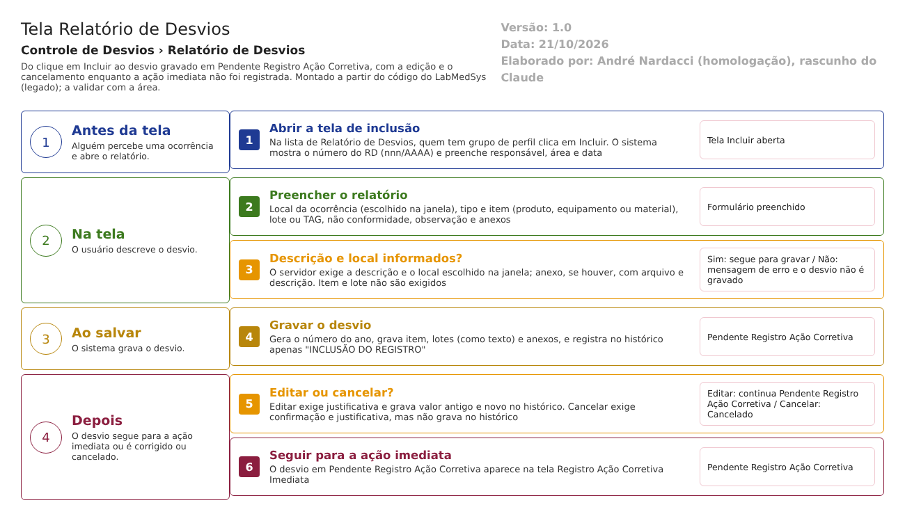

-
- Abrir a tela de inclusão. O usuário, com acesso, clica em Incluir na lista. O sistema mostra o número RD nnn/AAAA e preenche responsável, área e data.
-
- Preencher o relatório. O usuário escolhe o local, o tipo e o item, o lote ou a TAG, descreve a não conformidade e envia os anexos.
-
- Salvar e validar. O usuário clica em Salvar e confirma. O sistema confere descrição, local e anexos. Se faltar algo, mostra a mensagem e o desvio não é gravado.
-
- Gravar. O sistema calcula o número definitivo, grava o desvio em Pendente Registro Ação Corretiva e o histórico "INCLUSÃO DO REGISTRO". Aparece "Inclusão efetuada com sucesso."
-
- Editar ou cancelar enquanto a ação imediata não foi registrada. Editar exige justificativa, grava as mudanças no histórico e mantém a situação. Cancelar pede confirmação e justificativa, leva a Cancelado e não grava histórico.
-
- Seguir. O desvio em Pendente Registro Ação Corretiva aparece na tela Registro Ação Corretiva Imediata.
- Saídas alternativas: recusa por campo obrigatório (volta para a tela com a mensagem), Voltar (sai sem salvar), resposta NÃO na confirmação (nada é gravado) e cancelamento (fim do desvio).
Situações e histórico
Situação de entrada e de saída
| Operação | Situação de entrada | Situação de saída | Fonte |
|---|---|---|---|
| Incluir | Nenhuma (o desvio ainda não existe) | Pendente Registro Ação Corretiva | HSolutions.GQ.UI/Areas/Bloco2/Controllers/RegistroNaoConformidadeController.cs:282 |
| Editar | Pendente Registro Ação Corretiva (a tela só oferece nesta situação) | Pendente Registro Ação Corretiva (o código fixa esta situação sempre) | HSolutions.GQ.UI/Areas/Bloco2/Controllers/RegistroNaoConformidadeController.cs:359 |
| Cancelar | Pendente Registro Ação Corretiva (a tela só oferece nesta situação) | Cancelado | HSolutions.GQ.UI/Areas/Bloco2/Controllers/RegistroNaoConformidadeController.cs:537 |
| Visualizar, Imprimir e Histórico | Qualquer | Não muda | HSolutions.GQ.UI/Areas/Bloco2/Controllers/RegistroNaoConformidadeController.cs:572-629 |
O que grava na trilha de auditoria (histórico)
- Incluir: um registro "INCLUSÃO DO REGISTRO", com o usuário e a data, sem os valores dos campos e sem justificativa (HSolutions.GQ.Infrastructure/Repository/RepositoryBase.cs:33-46, 131-156).
- Editar: um registro por campo alterado, com valor antigo, valor novo, usuário, data e hora, e a justificativa digitada. Anexos incluídos ou excluídos aparecem como "Inclusão de anexo" e "Exclusão de anexo" (HSolutions.GQ.Infrastructure/Repository/RepositoryBase.cs:100-108, 272-391, 393-440; HSolutions.GQ.UI/Areas/Bloco2/Controllers/RegistroNaoConformidadeController.cs:470).
- Consulta: o ícone de histórico abre o Log da classe RegistroNaoConformidade (HSolutions.GQ.UI/Areas/Bloco2/Script/RegistroNaoConformidadeIndex.js:43-46; HSolutions.GQ.UI/Controllers/LogController.cs:28-100).
O que não grava
- Cancelamento: usa a alteração sem histórico (HSolutions.GQ.UI/Areas/Bloco2/Controllers/RegistroNaoConformidadeController.cs:548; HSolutions.GQ.Infrastructure/Repository/RepositoryBase.cs:94-98). Quem cancelou, quando e o motivo ficam só nas colunas do próprio desvio (IdResponsavelCancelamento, NomeResponsavelCancelamento, JustificativaCancelamento e DataCancelamento). Confirmado em teste: DV-GQ-001.
- O campo Justificativa não é registrado como campo alterado (HSolutions.GQ.Infrastructure/Repository/RepositoryBase.cs:322); a justificativa só aparece como texto ligado às alterações de outros campos.
- Visualizar, Imprimir e consultas de lista: nada é registrado.
- O usuário de criação do item, do lote e do registro de entrada (ID_USUARIO_CRIACAO) não é preenchido pelo código (fica zero); o desvio e os anexos têm o usuário gravado (Inferência, a confirmar no teste) (HSolutions.GQ.UI/Areas/Bloco2/Controllers/RegistroNaoConformidadeController.cs:209-210, 224-232, 244-247, 299).
- O histórico é gravado em TBL_LOG_ALTERACAO_GQ e TBL_LOG_ALTERACAO_GQ_ITEM, que não estão no projeto de banco (HSolutions.GQ.Context/Configurations/LogAlteracaoConfiguration.cs:16; RN-GQ-005, a confirmar com o DBA).
Dados
Tabelas da GQ tocadas
| Tabela | Colunas principais | Chaves e ligações | Para que serve nesta tela |
|---|---|---|---|
| TBL_REGISTRO_RNC | ID_REGISTRO_RNC, RNCN (texto), AnoRNCN, Descricao, Observacao, ObservacaoAnexo, Justificativa, Situacao, IdResponsavel, NomeResponsavel, IdAreaResponsavel, NomeAreaResponsavel, NomeUsuarioCriacao, IdLocalOcorrencia, NomeLocalOcorrencia, MetodoDeteccaoNaoConformidade, JustificativaCancelamento, NomeResponsavelCancelamento, IdResponsavelCancelamento, DataCancelamento, DATA_CRIACAO, ID_USUARIO_CRIACAO, DATA_ALTERACAO, ID_USUARIO_ALTERACAO, ATIVO, LIXEIRA | Chave: ID_REGISTRO_RNC. Liga ao item (ItemRegistroDesvio_Id) e às tabelas das etapas seguintes (ação imediata, pré-avaliação, avaliação, CAPA e planos). Sem índice único para o número do RD | O desvio |
| TBL_ITEM_REGISTRO_DESVIO | ID_ITEM_REGISTRO_DESVIO, TipoItem, IdItemRegistroDesvio, Descricao | Chave própria; é pai dos lotes | O item afetado (produto, equipamento ou material) |
| TBL_LOTE | ID_LOTE, IdLote, NumeroLote, Descricao, ItemRegistroDesvio_Id | Liga ao item; é pai dos registros de entrada | Lote copiado como texto |
| TBL_REGISTRO_ENTRADA | ID_REGISTRO_ENTRADA, IdRegistroEntrada, Descricao, Lote_Id | Liga ao lote | Registro de entrada copiado como texto |
| TBL_ANEXO | arquivo, descrição, chave da pasta, tamanho, tipo | Liga ao desvio | Anexos |
| TBL_LOG_ALTERACAO_GQ e TBL_LOG_ALTERACAO_GQ_ITEM | Campo, valor antigo, valor novo, usuário, data, justificativa | Pelo nome do objeto e id | Histórico (tabelas fora do projeto de banco) |
Fontes: Hsolutions.GQ.DB/Tables/TBL_REGISTRO_RNC.sql, TBL_ITEM_REGISTRO_DESVIO.sql, TBL_LOTE.sql, TBL_REGISTRO_ENTRADA.sql, TBL_ANEXO.sql; HSolutions.GQ.Context/Configurations/Bloco2/ControleDesvio/RegistroRNCConfiguration.cs:15.
O que lê ou grava em outros módulos
| Módulo | O que faz | Meio | Fonte |
|---|---|---|---|
| Principal | Lê as áreas (busca de local pelo nome), o nome da área do usuário e a TAG do equipamento; lê equipamentos pela descrição | API do Principal (Area/GetAreasPorNome, Area/GetAreaName, Equipamento/ListEquipamentosPorDescricao) | HSolutions.GQ.Services/Principal/AreaService.cs:14-42; HSolutions.GQ.Services/Principal/EquipamentoService.cs:13-40 |
| Produção | Lê produtos e lotes (busca por descrição e número do lote) | API da Produção (ConsultarProduto/GetProdutosPorDescricaoNumeroLote) | HSolutions.GQ.Services/Producao/ProdutoService.cs:95-100; HSolutions.GQ.UI/Areas/Bloco2/Controllers/RegistroNaoConformidadeController.cs:656-675 |
| Estoque | Lê materiais e lotes; a chamada vai para o endereço da Produção (Estoque/GetItensPorDescricao) | API (o serviço de Estoque usa o endereço da Produção) | HSolutions.GQ.Services/Estoque/EstoqueService.cs:17-22 |
| Todos | Não grava nada em outro módulo e não bloqueia lote nem equipamento: o lote é copiado como texto | Sem integração de escrita | HSolutions.GQ.UI/Areas/Bloco2/Controllers/RegistroNaoConformidadeController.cs:234-275 |